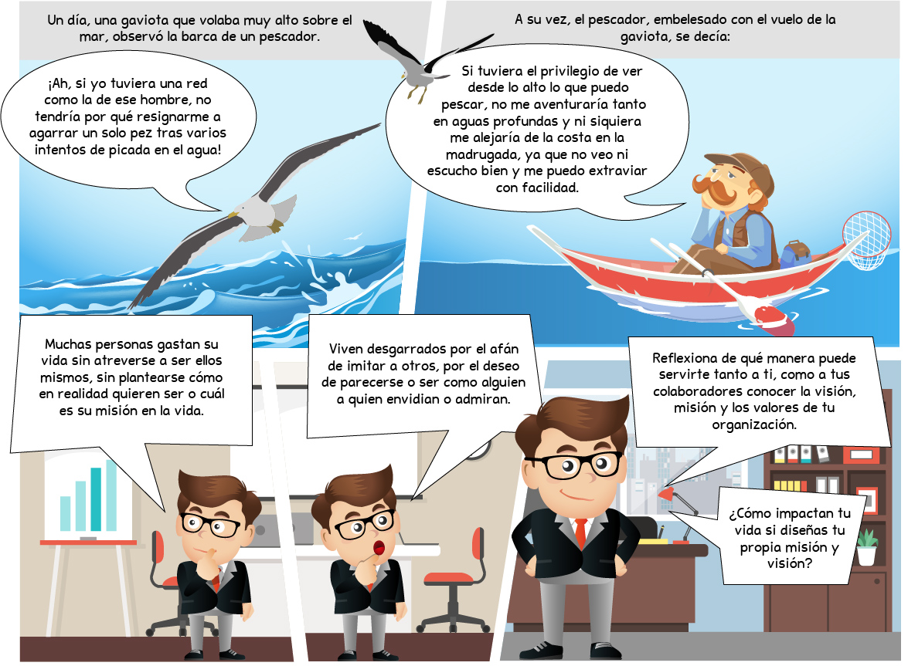
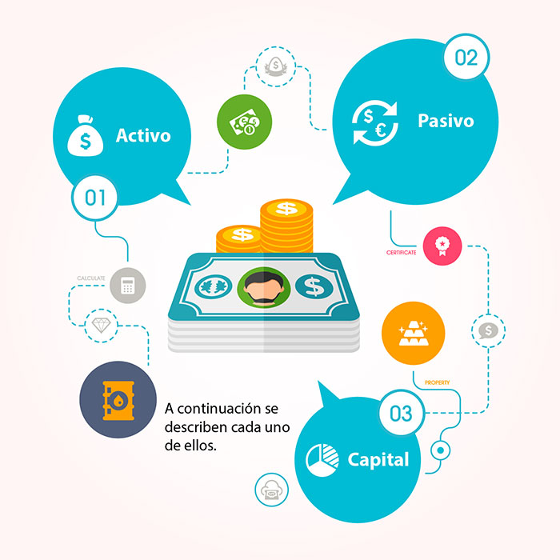
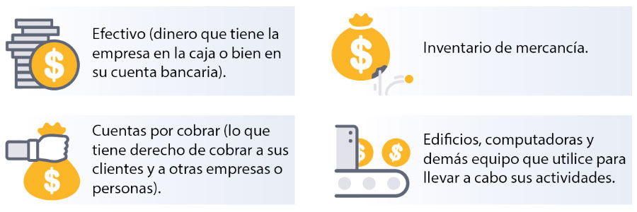

1.1 [Título del subtema]
1. Metáfora de la gaviota y el pescador

2. Descripción de etapas del ciclo contable
A continuación se definen una a una las fases del ciclo contable.
Gira las imágenes para ampliar la información.
1. Apertura o inicio de la contabilidad
1. Apertura o inicio de la contabilidad
Cada ejercicio contable se inicia con un asiento de apertura. El inicio se refleja con el saldo que se tiene en la cuenta de inventario final del ejercicio anterior y que será el saldo inicial para la misma cuenta al siguiente ejercicio. Esta cuenta representa el total de productos terminados (en costo) que la empresa puede vender. En este período se establecen los saldos de las cuentas de activo, pasivo y capital con las que la empresa iniciará el ejercicio.
2. Fase de registro de operaciones
2. Fase de registro de operaciones
El registro de operaciones se hace durante todo el ejercicio contable. Después del período de apertura, representa todas las operaciones y movimientos que se generan contablemente. La balanza de comprobación es el estado financiero que ayudará a comprobar si la información de los registros de esta fase son correctos al final de cada mes. La suma del activo debe ser igual a la suma de pasivo y capital.
3. Estimaciones y correcciones (Ajustes)
3. Estimaciones y correcciones (Ajustes)
Para asegurar que los registros contables del período reflejen la información real de la empresa, se hacen las estimaciones y ajustes al final de cada mes. En esta fase se consideran las depreciaciones y las amortizaciones, que son partidas virtuales, es decir, no es una salida o entrada de efectivo real, es solo el cálculo del uso de ciertos activos con el paso del tiempo.
4. Fase de resultados y cierre
4. Fase de resultados y cierre
En la cuarta fase de este ciclo, se regularizan los resultados, y se genera un asiento de cierre. Primero, se calcula el resultado del ejercicio haciendo el cierre de cada una de las cuentas de resultados, mismo que se logra elaborando los estados financieros básicos. Posteriormente se hace el asiento de cierre, que es calcular el saldo final de todas las cuentas que no sean de resultados, y que componen el patrimonio de la empresa.
5. Formulación de las cuentas anuales
5. Formulación de las cuentas anuales
La información que utilizan los socios, inversionistas y administradores de la empresa para la toma de decisiones es la que se obtiene a partir de las cuentas anuales. Estas cuentas son el resumen de todos los movimientos, sintetizados en los estados financieros anuales.
3. Administración ágil en los proyectos
En la sexta edición se hace una mayor referencia a la posibilidad de trabajar con apoyo de las metodologías ágiles durante la administración de proyectos; especialmente se incluyó una pequeña sección sobre las “Consideraciones para entornos adaptativos” en cada una de las áreas de conocimiento, así como la mención de herramientas como “iteraciones” y su planificación. En el anexo “X.3” de la sexta edición se describe lo que en el marco de la administración de proyectos podría comprender esta forma de administración.
Selecciona la imagen para ampliar la información.
4. El caso del Lic. Mendoza
Revisa una aplicación práctica del concepto periodo de recuperación.
Gira las imágenes y el texto a través de las flechas.
6. Balance general: Elementos
Los tres elementos principales del Balance general son:

7. Definición, determinación y ejemplos de Activos
¿Has escuchado hablar de los Activos?
Selecciona los apartados para ampliar la información.
Un activo es un recurso económico propiedad de una entidad, que se espera que rinda beneficios en el futuro.
El valor del activo se determina con base en (Guajardo & Andrade, 2012):
Valor del activo =
Costo de adquisición del artículo
+
Erogaciones necesarias para su traslado
+
Instalación
+
Arranque de operación
Ejemplos de Activos son:

- Efectivo (dinero que tiene la empresa en la caja o bien en su cuenta bancaria).
- Inventario de mercancía.
- Cuentas por cobrar (lo que tiene derecho de cobrar a sus clientes y a otras empresas o personas).
- Edificios, computadoras y demás equipo que utilice para llevar a cabo sus actividades.
Es decir, todas sus posesiones, derechos e inversiones, forman parte de sus ACTIVOS.
8. Procesos de apoyo
Los cambios realizados en esta temática referentes a los procesos de apoyo: calidad, recursos y comunicaciones permiten al director de proyectos tener una visión holística de todo el proyecto.